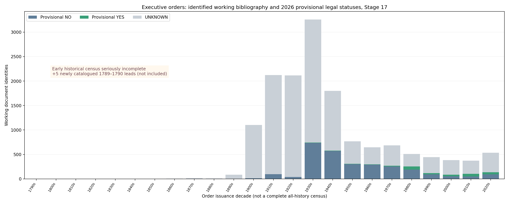

Cutoff October 14, 2026. Research work metrics remain independent. Incomplete census and unverifiable original bytes are explicitly acknowledged.

Additional five 1789–1790 catalogue candidates excluded from the denominator. Undated 2026 proxy records are shown separately in CSV.
540 Opus determinations imported with their AI review/source-original limitations; 531 held; 155 conflicts preserved. 438 Stage16 legal events plus 26 newly reasoned scoped transitions. 60,505 individual claims reviewable through the offline docket generator. Official text scans for most new studies are not stored locally.
Historical national denominator unknown. Whole-order first cessation mostly unreconstructed. The 13 new provision-level first-end entries require human and source-image validation. A source's later formal revocation is not automatically a first cessation. Independent review and alternative TC06/TC07/TC09 semantics remain ongoing.